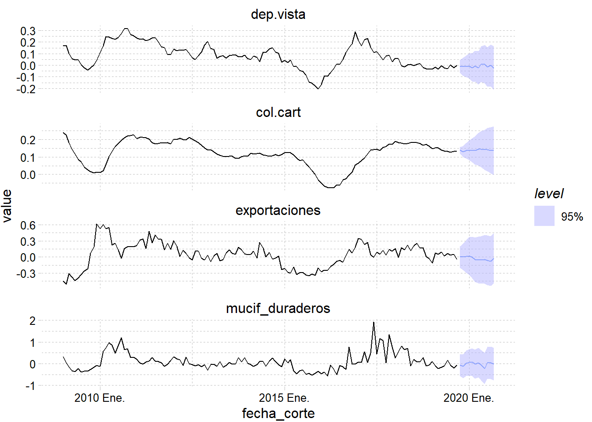

The following objects are masked from 'package:base':
intersect, setdiff, union
library(feasts)
Loading required package: fabletools
library(ggplot2)library(openxlsx)library(dplyr)library(ggthemes)library(reshape2)library(fable) #multiples series de tiempolibrary(lubridate)
Attaching package: 'lubridate'
The following object is masked from 'package:tsibble':
interval
The following objects are masked from 'package:base':
date, intersect, setdiff, union
# label: evolución de los montos # fig-width: 10# fig-asp.1.5# fig-alt: |# Variación porcentual interanual (año a año) de los # diferentes indicadores f1 %>%autoplot(dd, level =95, alpha=0.5) + ggthemes::theme_pander()

#—-codigo que va en power bi —-
library(tsibble)library(feasts)library(ggplot2)library(openxlsx)library(dplyr)library(ggthemes)library(reshape2)library(fable) #multiples series de tiempolibrary(lubridate)
Warning in report.mdl_df(modelo): Model reporting is only supported for
individual models, so a glance will be shown. To see the report for a specific
model, use `select()` and `filter()` to identify a single model.
#para saber la desviacion standard hay que dividir los coeficientes, #como n es mayor que 30, entonces se toma el valor absoluto de los #coeficientes0.8635/0.1203# [1\] 7.177889 mayor que 2, es estadisticamente significativo